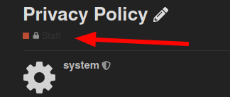
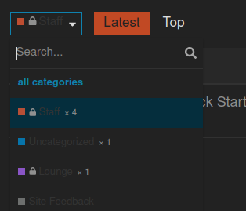
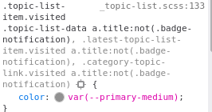

Hey guys
what change do I have to make in the header to get the excerpt for featured topics back?
Also my avatars are gone from topic list after I updated the theme component:
Hey guys
what change do I have to make in the header to get the excerpt for featured topics back?
Also my avatars are gone from topic list after I updated the theme component:
My guess is that you are running a fork, latest has the avatars.
Just checked, my theme’s source link points to https://github.com/discourse/discourse-simple-theme.git
Also just re-installed it from the source link again, same issue on theme preview
Maybe update discourse to latest ?
I am on 2.4.1. Are you referring to 2.5 beta?
Yes the change in the avatar was in the version 2.5.0 beta 2.
Ah I see. Just scrolled up and found your temporary fix.
@Steven can you tell me what part in that header code to adjust to bring back the excerpt of pinned topics again?
There already is a excerpt reference, so you might want to delete line 16 first
{{raw "list/topic-excerpt" topic=model}}
Then, I would add this
{{#if expandPinned}}
{{raw "list/topic-excerpt" topic=topic}}
{{/if}}
Right after this
{{raw "list/action-list" topic=topic postNumbers=topic.liked_post_numbers className="likes" icon="heart"}}
</div>
So just before the </td>
If you use the old header code, that should look like this
<script type='text/x-handlebars' data-template-name='list/topic-list-item.raw'>
{{#if bulkSelectEnabled}}
<td class='star'>
<input type='checkbox' class='bulk-select'>
</td>
{{/if}}
<td class='main-link clearfix'>
{{raw "topic-status" topic=topic}}
{{topic-link topic}}
{{#if controller.showTopicPostBadges}}
{{raw "topic-post-badges" unread=topic.unread newPosts=topic.displayNewPosts unseen=topic.unseen url=topic.lastUnreadUrl}}
{{/if}}
{{discourse-tags topic mode="list"}}
<div class='creator'>
{{#if showCategory}}
{{category-link topic.category}}
{{/if}}
{{~#if topic.creator ~}}
<a href="/users/{{topic.creator.username}}" data-auto-route="true" data-user-card="{{topic.creator.username}}">{{topic.creator.username}}</a> <a href={{topic.url}}>{{format-date topic.createdAt format="tiny"}}</a>
{{~/if ~}}
{{raw "list/action-list" topic=topic postNumbers=topic.liked_post_numbers className="likes" icon="heart"}}
</div>
{{#if expandPinned}}
{{raw "list/topic-excerpt" topic=topic}}
{{/if}}
</td>
{{#if controller.showLikes}}
<td class="num likes">
{{number topic.like_count}} <i class='fa fa-heart'></i>
</td>
{{/if}}
{{#if controller.showOpLikes}}
<td class="num likes">
{{number topic.op_like_count}} <i class='fa fa-heart'></i>
</td>
{{/if}}
{{raw "list/posts-count-column" topic=topic}}
<td class="last-post">
<div class='poster-avatar'>
<a href="{{topic.lastPostUr}}" data-user-card="{{topic.last_poster_username}}">{{avatar topic.lastPoster usernamePath="username" imageSize="medium"}}</a>
</div>
<div class='poster-info'>
<a href="{{topic.lastPostUrl}}">
{{format-date topic.bumpedAt format="tiny"}}
</a>
<span class='editor'><a href="/users/{{topic.last_poster_username}}" data-auto-route="true" data-user-card="{{topic.last_poster_username}}">{{topic.last_poster_username}}</a></span>
</div>
</td>
</script>
<script type='text/x-handlebars' data-template-name='topic-list-header.raw'>
{{#if bulkSelectEnabled}}
<th class='star'>
{{#if canBulkSelect}}
<button class='btn bulk-select' title='{{i18n "topics.bulk.toggle"}}'><i class='fa fa-list'></i></button>
{{/if}}
</th>
{{/if}}
{{raw "topic-list-header-column" order='default' name='topic.title' bulkSelectEnabled=bulkSelectEnabled showBulkToggle=toggleInTitle canBulkSelect=canBulkSelect}}
{{#if showLikes}}
{{raw "topic-list-header-column" sortable='true' order='likes' number='true' forceName=(theme-i18n 'likes')}}
{{/if}}
{{#if showOpLikes}}
{{raw "topic-list-header-column" sortable='true' order='op_likes' number='true' forceName=(theme-i18n 'likes')}}
{{/if}}
{{raw "topic-list-header-column" sortable='true' number='true' order='posts' forceName=(theme-i18n 'replies') }}
{{raw "topic-list-header-column" sortable='true' order='activity' forceName=(theme-i18n 'last_post')}}
</script>
<script>
(function(){
var TopicListItemView = require('discourse/components/topic-list-item').default;
TopicListItemView.reopen({
showCategory: function(){
return !this.get('controller.hideCategory') &&
this.get('topic.creator') &&
this.get('topic.category.name') !== 'uncategorized';
}.property()
});
})();
</script>
I just added this code to the theme’s Header part, yet avatars still don’t show up. Am I missing something?
Tried this code as well, avatars not showing up. Even tried safe mode and disabled all plugins
FYI: the conflict with Topic List Previews prevented the excerpts to be displayed even with the code provided
I edited my previous post, I got confused with all the different versions.
The code you added was for the newest version of Discourse. If I understand correctly, you need a to edit the header for a old version of Discourse, so I changed my last post with a version for a version previous than 2.5.0 b2
It would be easier to upgrade Discourse tho, lots of cool new features 
Which I am looking forward to 
yet I prefer to stay on stable 
Thx for the update!
@sam Are there any plans to make the theme component compatible with Topic List Previews plugin anytime soon?
No specific plans to do so
How would I add a “users” column between the thread title and reply count with the name and/or avatar of the user who started each respective thread? Could it be done using the the customize function or the theme creator?
I was usually using “Sam’s simple theme” (which I like very much) here on meta. Seems to bug since yesterday on my end !? I tried on a fresh install of a different browser (firefox instead of chrome), and the problem seems identical. I don’t have the upper banner, only a few topics appearing, and clicking on one doesn’t work. Everything seems fine with another theme.
It should be fixed now. Thanks for reporting the issue @Mevo 
Looks like the theme is not compatible with Dark schemes  and thus with Automatic Dark Mode color scheme switching
and thus with Automatic Dark Mode color scheme switching
I have updated the theme to improve dark mode compatibility, you should see an improvement after pulling the latest changes.
Thanks 
But the category names are still broken.


The category badges should be fixed now, too.
The color of unread topics is a bit hard to read:
Default theme:
This theme:
Probably need to un-hardcode this:
hm, looks like something is broken after recent update.
Now openning a topic from the list results in loading completely new page instead of just loading the topic with loading indicator etc. So it is a bit confusing because for a second it is unclear whether the click worked, and the editor window is lost, so it is difficult to add quotes from other topics etc.
There was a bug related to this introduced a few days ago, but has since been fixed.
Can you please check if your site is on the latest?
/admin/upgrade
oh, cool 
Yeah, it is not latest
2.7.0.beta8 ( f002c58a30 )
The fix for the bug I mentioned was added a couple of days after your most recent upgrade. Can you please try upgrading again and let me know if the issue persists?
Yeah, seems to work fine after upgrade.
I wonder though why this issue was occurring only in this theme, others had this auto-route thing too but somehow were working fine. 
Submitted a PR fixing this
Theme is significantly different in topic views since update… Please help!!!
can you be more specific about what has changed? do you have a screenshot?
Yes, here is what it looked like before the update:
Now it looks like this:
hmm that’s strange… the theme works fine here on Meta…
I don’t see any console errors on your site… did you edit the theme at all? if you install another copy of it does it have the same issue?
A quick look shows that REFACTOR: Update structure, fix for ember-cli (#5) · discourse/discourse-simple-theme@0482a6c · GitHub may have changed the way that page is formatted on Aug 10th.
That refactored the theme structure, and fixed an issue with our ember-cli updates, but shouldn’t have changed anything about the layout (it’s also working as expected on our theme creator site: Discourse Theme Creator).
I found the problem, looks like those changes conflicted with a component that was in place which resulted int he changes to the displayed format.
Thank you
I’m running into a similar issue with most recent update - updated everything at once so not sure if it was theme, another component, or discourse itself:
Discourse 2.8.0.beta8
10a57825c8
Theme updated November 21 (can’t find version number) ‘up to date’.
Now, read, and unread all show as ‘unread’ secondary blue on desktop, but work correctly on mobile:
Desktop:
Mobile:
Same on various iterations of light, medium, dark schemes that we’ve made…the ‘categories+latest’ main page 2 column layout seems correct with brighter bold unread, and muted unbold read topics; but the ‘latest’ listing is all bold tertiary all the time.
Using preview on other themes (default, and others) seems to show the correct behaviour.
Did you solve this issue?
The same for me, everything is shown like unread, other themes work fine.
Looking into DevTools, seems like this rule from app/assets/stylesheets/common/base/_topic-list.scss somehow disappears when using this theme

ah, looks like topic-list-data is missing here.
Submitted PR.
I had not - thank you very much for looking into this 
verified the pr was committed in my install - works like a charm 
Hi, thanks very much for this traditional theme, it’s much closer to what my migrated legacy forum users would expect!
There appears to be a small bug in the “Suggested Topics” list when clicking on the avatar of the last post user; the user profile briefly appears for a few milliseconds and then disappears.
Hi there, another bug is that the cog button doesn’t appear for bulk actions with Sam’s Simple Theme (it does with the Discourse default one):
Hi there, are pull requests being accepted for this theme? I submitted a PR a few days ago with a simple 2 line fix for a fairly significant bug that is breaking links to user profiles.
This PR has been merged. Thank you for the fix 
Hi there, one of the biggest improvements in this theme is the elimination of the posters column from topic lists, and it simply shows the original poster and the latest poster. However, this paradigm falls apart in the list of private message topics. When the user is both the starter and the latest poster in a PM topic there is no indication of who the other recipient(s) is/are. So it feels like specifically for the PM topics list the default Discourse theme’s posters avatars column needs to be used. Is there a clean way for me to add it back with a theme component until this gets fixed in the official code of Sam’s Simple Theme? Thanks!
I’m pretty sure that this is a new regression, in desktop browser mode the latest poster avatar pops up partially off-screen:
Hm, I’m unable to reproduce 
As a side note, this user card modal is from this theme component: Usercard Redesign Experiment
@Arkshine Hi, appreciate the reply. I think it happens when the zoom level is higher. I first noticed the issue on Firefox, where I have the default zoom set to 110%, and also layout.css.devPixelsPerPx set to 1.1 . But I can also reproduce it with Chromium’s default settings by just zooming in a bit (it appears to only happen when the browser is maximized):
Ah, ok. I think I’ll cross-post this issue there. It seems like the usercard component should take care of its own CSS to avoid appearing off-screen. But the issue is complicated by Sam’s Simple Theme, which has the user card closer to the right edge.
{kind=link}
{kind=link}
{kind=link}
{kind=link}
{kind=link}
{kind=link}
{kind=link}
{kind=link}
{kind=link}
{kind=link}
{kind=link}
{kind=link}
{kind=link}
{kind=link}